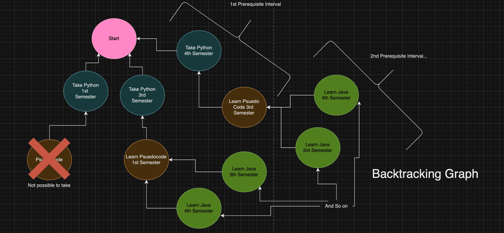

Impact
Currently I am working with Berkeleytime to implement my course optimizing feature developed in this project into their website to help over 10,000 students schedule their courses. Currently, they are migrating their courses database into a graph database, from which I will be aiming to hopefully advise and implement my scheduler service.
Motivation
As a former student, I realize how daunting it is to decide what classes to schedule. We have to decide what courses to take, when to take it,
and to ensure that all prerequisites are taken. And if change to the schedule is made, commonly the entire schedule has to be restructured. To simply this process, I created a scheduling backend service with a backtracking algorithim to help automate
this porcess of course scheduling so that optimal schedules can be easily found and fit for
Features:
-x- Students can create multiple draft schedules from course catalog
-x- Students can optimize schedules to spread out difficulty, ensure prerequisites are taken, and that the prerequsites are taken relatively sequentially with a click of a button
-x- Students can specify a course has to be taken at semester _, which the optimizer will respect
Features to implement:
-x- Current Schedule database is implemented in MONGODB, will migrate to MYSQL Soon
-x- Backend service to schedule classes in schedule when draft schedule is exported
-x- Students can impose a course has to be taken by semester _.
A Solution(In-Depth Algorithim)

My algorithim to schedule courses effeciently involved backtracking "PreRequiste Intervals" for each course the user wanted to take - which constitutes a list of required prerequisite courses that had to be taken in a certain relative order. To effeciently extract these intervals, I stored prerequisites in a graph database and preformed an in-order DFS to linearize the DAG and get a pointer to each prerequisite (Picture Above) To optimize schedules, "PreRequiste Intervals" are fetched from the CourseCatalog(database-service) endpoint for each course in the students schedule the intervals are then backtracked based on how much semesters the students have left in Berkeley through a tree diagram like the (Image Below).
Keywords/Technologies🤓
Data Storage: Course data stored in neo4j. And schedules/user data in MySQL. Data acess through ORM and Spring Data JPA
Distributed Systems:Implemented Microservices with RESTful APIs with different endpoints with Spring Boot. API Gateway, Service Discovery, Load Balancer with Spring Cloud. Security configs with Spring Security, Identity Managaement/Authorization with KeyCloak. Microservice connection through Spring Web. Kafka for async communcation(to be implemented). Logging with SLF4J. Testing with JUnit5. Containerization with Docker.